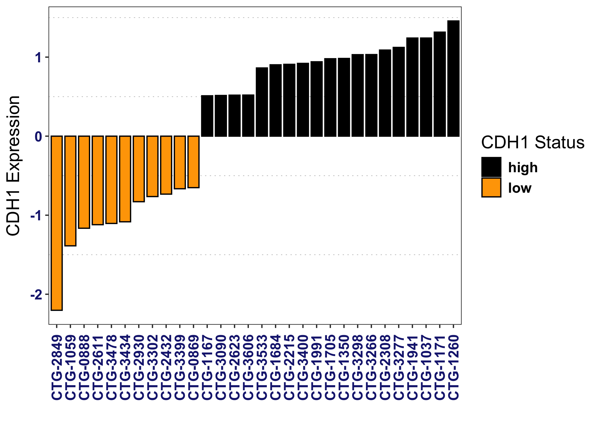
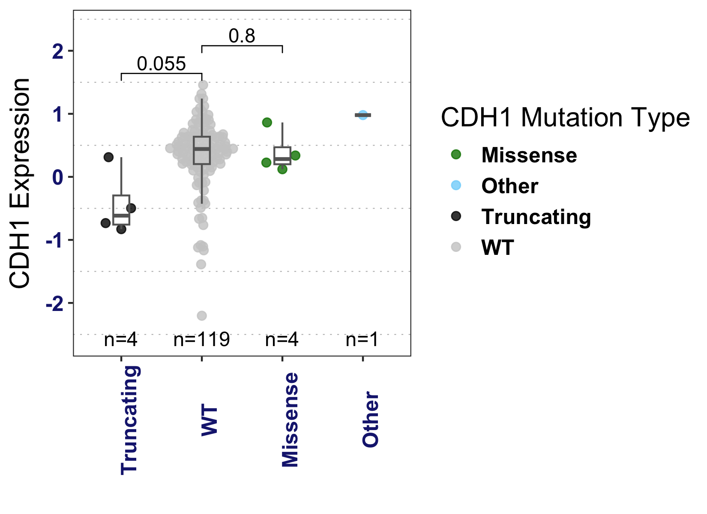
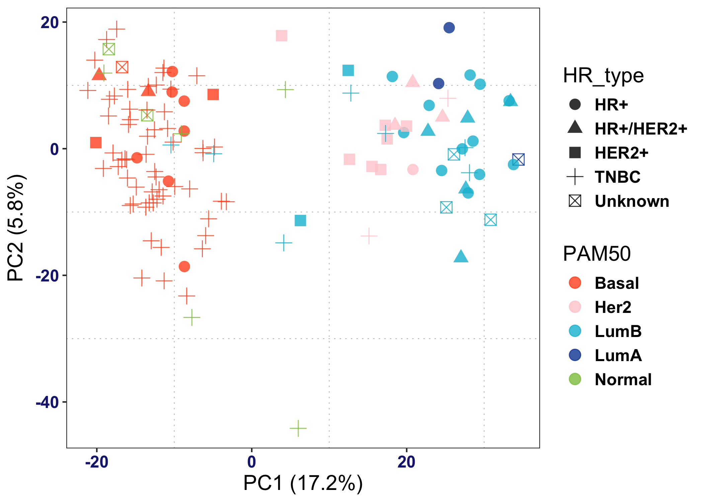
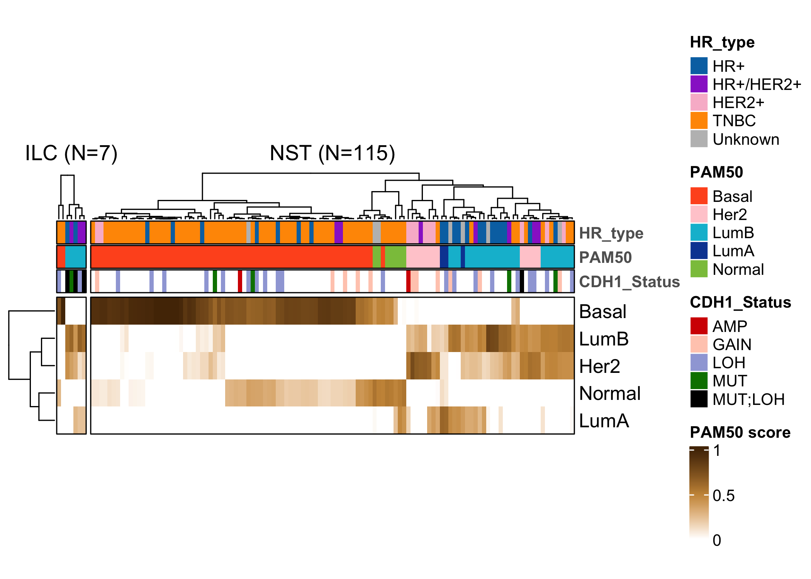
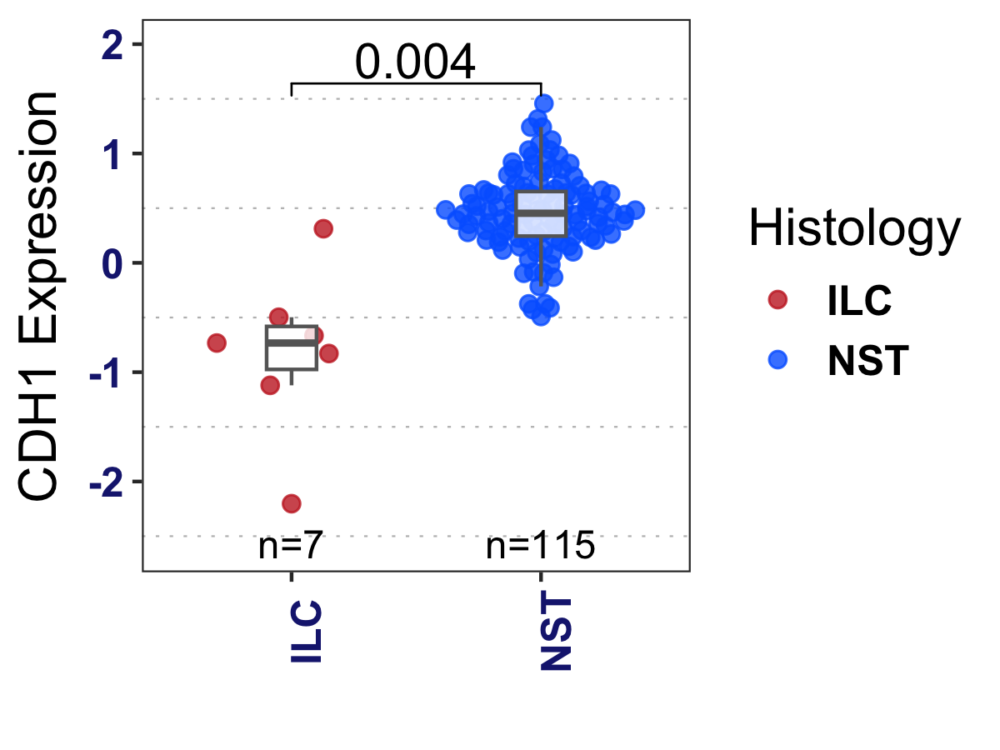
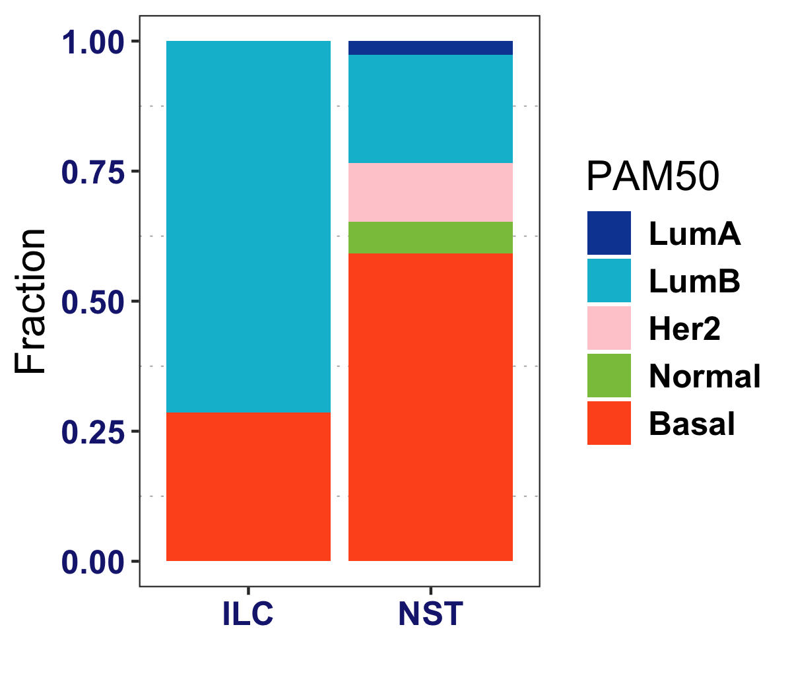
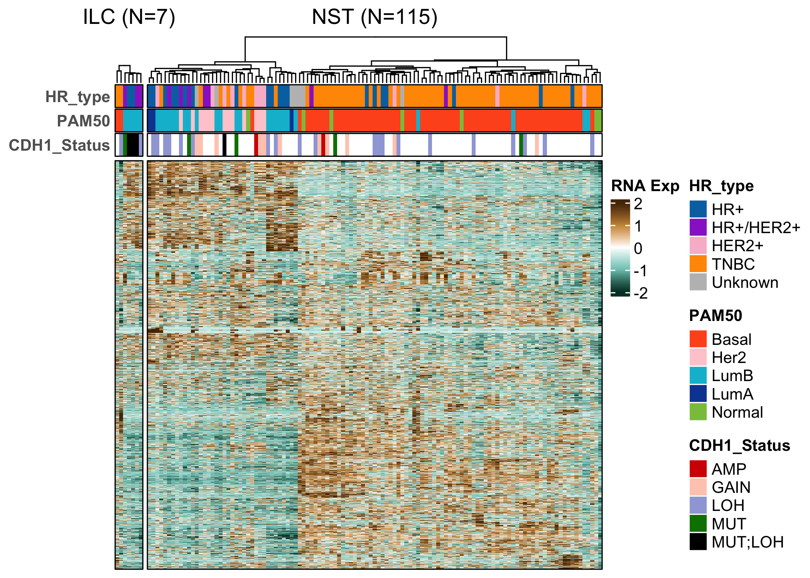
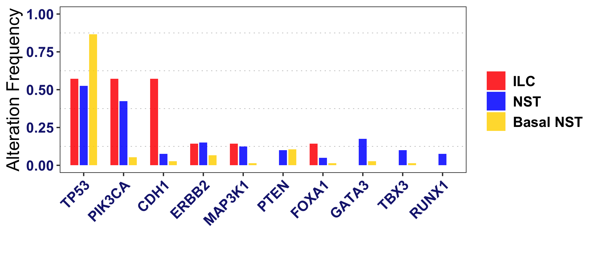

Champions Oncology ILC PDX Multiomics Dataset Analysis
Osama Shiraz Shah 2026-02-19
DISCLAIMER This respository can reproduce the bioinformatics analysis in “Identification and Credentialing of Patient Derived Xenograft Models of Invasive Lobular Breast Carcinoma using Multi-omics and Histopathology assessment”. Run the script in sequential order. Make sure packages listed in the session info text file are installed. Changes in R and/or its package versions may result in changes in the expected output.
LICENSING https://creativecommons.org/licenses/by-nc-nd/4.0/ This code/data is distributed under Creative Commons Attribution-NonCommercial-NoDerivatives License 4.0 (CC BY-NC-ND).
Data Analysis
Setup Environment
knitr::opts_chunk$set(
fig.path = "figures/", # saves all plots to figures/
dev = c("png","pdf"),
dpi = 300
)`%notin%`=Negate(`%in%`)
library(magrittr)
library(ggplot2)
library(cowplot)
library(dplyr)##
## Attaching package: 'dplyr'
## The following objects are masked from 'package:stats':
##
## filter, lag
## The following objects are masked from 'package:base':
##
## intersect, setdiff, setequal, unionlibrary(EnvStats)##
## Attaching package: 'EnvStats'
## The following objects are masked from 'package:stats':
##
## predict, predict.lm
## The following object is masked from 'package:base':
##
## print.defaultlibrary(ggpubr)##
## Attaching package: 'ggpubr'
## The following object is masked from 'package:cowplot':
##
## get_legendlibrary(gridExtra)##
## Attaching package: 'gridExtra'
## The following object is masked from 'package:dplyr':
##
## combinelibrary(ggthemes)##
## Attaching package: 'ggthemes'
## The following object is masked from 'package:cowplot':
##
## theme_maplibrary(reshape2)
library(ComplexHeatmap)## Loading required package: grid
## ========================================
## ComplexHeatmap version 2.24.1
## Bioconductor page: http://bioconductor.org/packages/ComplexHeatmap/
## Github page: https://github.com/jokergoo/ComplexHeatmap
## Documentation: http://jokergoo.github.io/ComplexHeatmap-reference
##
## If you use it in published research, please cite either one:
## - Gu, Z. Complex Heatmap Visualization. iMeta 2022.
## - Gu, Z. Complex heatmaps reveal patterns and correlations in multidimensional
## genomic data. Bioinformatics 2016.
##
##
## The new InteractiveComplexHeatmap package can directly export static
## complex heatmaps into an interactive Shiny app with zero effort. Have a try!
##
## This message can be suppressed by:
## suppressPackageStartupMessages(library(ComplexHeatmap))
## ========================================annot_cols <- list(Histology=c("ILC"="#c62828","ILC-like"="purple","NST"="#0066ff", "Other"="gray","Fibroblast"="#9c7a3b"),
PAM50=c("LumA"="#0D47A1","LumB"="#00BCD4","Her2"="#ffcdd2","Basal"="#FF5722","Normal"="#8BC34A"),
HR_type=c("HR+"="#0072B2","TNBC"="#FF9800", "HER2+" = "#F8BBD0",
"HR+/HER2+"='darkorchid3',"Unknown"="gray"),
CDH1_RNA = circlize::colorRamp2(c(-2,-1, 0, 1, 2), colors =c("#003d30", "#7dc8bf","white", "#ca9446", "#543005"), space = 'RGB'))
alteration_cols = c("GAIN"= "#FFCCBC", "LOH" = "#9FA8DA", "AMP" = "#d50000", "DEL"= "#2962FF", "WT" = "gray",
"MUT" = "#008000", "MUT;LOH" = "black", "MUT;GAIN" = "#FFB300", "MUT;AMP" = "#F4511E")
library(ggplot2)
library(ggpubr)
myTheme <- function(text_size = 15, axis_text_size = 12, legend_text_size = 12, subtitle_size = 8) {
theme_bw() +
theme(
# TEXT
text = element_text(size = text_size),
axis.text = element_text(size = axis_text_size, face = "bold", color = "#1A237E"),
legend.text = element_text(size = legend_text_size, face = "bold"),
plot.subtitle = element_text(size = subtitle_size, face = "bold"),
# BACKGROUND
legend.background = element_rect(fill = "white", size = 4, colour = "white"),
panel.grid.major = element_blank(),
panel.grid.minor = element_line(color = "#BDBDBD", linetype = "dotted")
)
}Load Data
clinical_data = readxl::read_excel("./input/clinical_data.xlsx") %>% as.data.frame()
rownames(clinical_data) = clinical_data$Model
load("./input/pam50_subtypes_df.Rdata")
load("./input/rna_logtpm.Rdata")
rna_zscore = t(scale(t(rna_logtpm)))
load("./input/alteration_gam_snv_cnv.Rdata")# Add alteration status columns from alteration_gam (columns must be model IDs)
clinical_data$`CDH1 Alteration Status` <- alteration_gam["CDH1", clinical_data$Model]
clinical_data$`PIK3CA Alteration Status` <- alteration_gam["PIK3CA", clinical_data$Model]
clinical_data$`TP53 Alteration Status` <- alteration_gam["TP53", clinical_data$Model]
clinical_data$`ERBB2 Alteration Status` <- alteration_gam["ERBB2", clinical_data$Model]
clinical_data$`CDH1 Mutation Effect`[is.na(clinical_data$`CDH1 Mutation Effect`)] = "WT"
# HR_type parsed from clinical HR string
clinical_data <- clinical_data %>%
mutate(
HR_type = case_when(
# Triple Negative
ER.PR.HER2.clinical.status == "Triple negative" ~ "TNBC",
# Hormone Receptor Positive, HER2 Negative
ER.PR.HER2.clinical.status %in% c("ER+/PR+/HER2-", "ER+/PR-/HER2-",
"ER-/PR+/HER2-", "ER+/PR+", "ER+", "PR+") ~ "HR+",#/HER2-
# Hormone Receptor Positive, HER2 Positive
ER.PR.HER2.clinical.status %in% c("ER+/PR+/HER2+", "ER+/HER2+",
"ER+/PR-/HER2+", "PR+/HER2+") ~ "HR+/HER2+",
# Hormone Receptor Negative, HER2 Positive
ER.PR.HER2.clinical.status %in% c("ER-/PR-/HER2+", "HER2+") ~ "HER2+",#HR-
ER.PR.HER2.clinical.status == "Not available" | is.na(ER.PR.HER2.clinical.status) ~ "Unknown",
TRUE ~ "Other"
)
)
clinical_data$HR_type <- factor(clinical_data$HR_type, c("HR+", "HR+/HER2+", "HER2+", "TNBC", "Unknown"))
# Verify the changes by looking at a table of the old vs new column
table(clinical_data$ER.PR.HER2.clinical.status, clinical_data$HR_type, useNA = "ifany")##
## HR+ HR+/HER2+ HER2+ TNBC Unknown
## ER-/PR-/HER2+ 0 0 8 0 0
## ER-/PR+/HER2- 1 0 0 0 0
## ER+ 4 0 0 0 0
## ER+/HER2+ 0 4 0 0 0
## ER+/PR-/HER2- 6 0 0 0 0
## ER+/PR-/HER2+ 0 3 0 0 0
## ER+/PR+ 1 0 0 0 0
## ER+/PR+/HER2- 12 0 0 0 0
## ER+/PR+/HER2+ 0 2 0 0 0
## HER2+ 0 0 3 0 0
## Not available 0 0 0 0 4
## PR+ 1 0 0 0 0
## PR+/HER2+ 0 1 0 0 0
## Triple negative 0 0 0 75 0
## <NA> 0 0 0 0 3# PAM50
clinical_data$PAM50 = PAM50.subtype$subtype[clinical_data$Model]Table S1 - Putative ILCs
# =========================
# Table S1-style table (clinical + RNA + alterations + mutations)
# =========================
# Putative ILC logic and confirmed labels
confirmed_ILC <- c("CTG-2432","CTG-2849","CTG-3283","CTG-3399","CTG-2810","CTG-2611","CTG-2930")
confirmed_mixed <- c("CTG-3434")
clinical_data$Putative_ILC <- ifelse(
clinical_data$`CDH1 mRNA Levels` == "low" | clinical_data$`CDH1 Mutation Effect` == "Truncating", "Y", ""
)
clinical_data$Type <- ifelse(clinical_data$Putative_ILC == "Y", "Putative ILC", "NST")
clinical_data$Type[clinical_data$Model %in% confirmed_ILC] <- "ILC"
clinical_data$Type[clinical_data$Model %in% confirmed_mixed] <- "mDLC"
clinical_data$`Confirmed ILC` = ifelse(clinical_data$Model %in% confirmed_ILC, "Y", "")
openxlsx::write.xlsx(x = clinical_data[, grep("Type", colnames(clinical_data), invert = T)], row.names = F,
sheetName = "Putative ILC PDX", file = "./2025 - Champions Oncology PDX N 128 Summary.xlsx")## Warning: Please use 'rowNames' instead of 'row.names'clinical_data_confirm <- subset(clinical_data, Type != "Putative ILC" & Model != confirmed_mixed)Fig 1A - CDH1 mRNA distribution
# all PDX
df <- subset(clinical_data, `CDH1 mRNA Levels` %in% c("low","high"))
ord <- df[order(df$`CDH1 Expression`, decreasing = TRUE), ]
top_cdh1 <- head(ord, 15)
bottom_cdh1 <- tail(ord, 15)
ggplot(rbind(top_cdh1, bottom_cdh1),
aes(y = `CDH1 Expression`, x = reorder(Model, `CDH1 Expression`), fill = `CDH1 mRNA Levels`)) +
geom_col(color = "black", width = 0.8) +
scale_fill_manual("CDH1 Status", values = c("low"="orange","mid"="gray","high"="black")) +
myTheme(15) + theme(axis.text.x = element_text(angle = 90, hjust = 0, vjust = 0.5)) +
ylab("CDH1 Expression") + xlab("")## Warning: The `size` argument of `element_rect()` is deprecated as of ggplot2 3.4.0.
## ℹ Please use the `linewidth` argument instead.
## This warning is displayed once every 8 hours.
## Call `lifecycle::last_lifecycle_warnings()` to see where this warning was
## generated.
Fig 1B - Lollipop Plot with CDH1 Mutations
To reproduce the CDH1 lollipop plot, please input the following text onto the lollipop app on ProteinPaint website.
| Protein Paint Input |
|---|
| p.E494fs, chr16:68849575, X |
| p.V460fs, chr16:68849473, X |
| p.T748fs, chr16:68862153, X |
| p.Q23*, chr16:68772218, X |
| p.A592T, chr16:68855966, S |
| Intron, chr16:68846252, Intron |
| p.P30T, chr16:68772239, S |
| p.E165K, chr16:68842432, S |
| p.D777N, chr16:68863590, S |
You can also refer to the following youtube tutorial for guidance and instructions: Lollipop App Usuage Tutorial
Fig 1C - CDH1 mRNA levels in Mutated vs WT cases
# all PDX
ggplot(clinical_data, aes(x = reorder(`CDH1 Mutation Effect`, `CDH1 Expression`),
y = `CDH1 Expression`)) + ylim(c(-2.6, 2.4)) + EnvStats::stat_n_text() +
ggbeeswarm::geom_quasirandom(alpha = 0.8, size = 2, aes(color = `CDH1 Mutation Effect`)) +
geom_boxplot(alpha = 0.1, outlier.shape = NA, colour = "gray40", width = 0.2) +
scale_color_manual("CDH1 Mutation Type",
values = c("Truncating"="black","Missense"="#008000","WT"="gray80","Other"="#81D4FA")) +
myTheme(15) + xlab("") + ylab("CDH1 Expression") + theme(axis.text.x = element_text(angle = 90)) +
stat_compare_means(comparisons = list(c("Truncating", "WT"), c("WT", "Missense")), method = "t.test")
Fig S1A - PCA plot of confirmed ILC vs NST cases
# only assessing confirmed ILC and NST cases (excluding putative ILC and mixed cases)
samples_use <- clinical_data_confirm$Model
feature_vars <- apply(rna_logtpm[, samples_use, drop = FALSE], 1, var)
feature_vars <- sort(feature_vars, decreasing = TRUE)
n_feat <- max(1, floor(length(feature_vars) * 0.10))
select_features <- names(feature_vars)[seq_len(n_feat)]
set.seed(123); pca_res <- prcomp(t(rna_logtpm[select_features, samples_use, drop = FALSE]), scale. = TRUE)
pca_df <- as.data.frame(pca_res$x[, 1:2, drop = FALSE])
pca_df$Model <- rownames(pca_df)
ve <- summary(pca_res)$importance["Proportion of Variance", 1:2]
labs <- paste0(c("PC1","PC2"), " (", round(ve*100,1), "%)")
plot_df <- dplyr::left_join(
pca_df, clinical_data_confirm[, c("Model","HR_type","PAM50")],
by = "Model"
)
ggplot(plot_df, aes(PC1, PC2, color = PAM50, shape = HR_type)) +
geom_point(size = 3.5, alpha = 0.8) + scale_color_manual("PAM50",values = annot_cols$PAM50) +
myTheme(15) + xlab(labs[1]) + ylab(labs[2]) +
scale_shape_discrete(drop = FALSE)
Fig S1B - PAM50 heatmap of confirmed ILC vs NST cases
library(ComplexHeatmap); library(circlize)## ========================================
## circlize version 0.4.16
## CRAN page: https://cran.r-project.org/package=circlize
## Github page: https://github.com/jokergoo/circlize
## Documentation: https://jokergoo.github.io/circlize_book/book/
##
## If you use it in published research, please cite:
## Gu, Z. circlize implements and enhances circular visualization
## in R. Bioinformatics 2014.
##
## This message can be suppressed by:
## suppressPackageStartupMessages(library(circlize))
## ========================================pam_mat <- t(PAM50.subtype$subtype.proba[samples_use, , drop = FALSE])
colFun3 <- circlize::colorRamp2(c(0, 0.5, 1), c("white", "#ca9446", "#543005"))
top_annots <- function(ids) {
HeatmapAnnotation( annotation_name_side = "right", border = TRUE,
HR_type = clinical_data_confirm[ids, "HR_type", drop = TRUE],
PAM50 = clinical_data_confirm[ids, "PAM50", drop = TRUE],
CDH1_Status = clinical_data_confirm[ids, "CDH1 Alteration Status", drop = TRUE],
annotation_name_gp = gpar(fontsize = 10, fontface="bold", col="#616161"),
na_col = "white",
col = list(HR_type = annot_cols$HR_type, PAM50= annot_cols$PAM50, CDH1_Status = alteration_cols
)
)
}
set.seed(123)
pam_ht <- Heatmap(
pam_mat, col = colFun3, name = "PAM50 score", height = unit(3, "cm"),
show_column_names = FALSE, show_row_names = TRUE, border = TRUE,
cluster_row_slices = FALSE, cluster_column_slices = FALSE,
column_split = clinical_data_confirm$Type,
column_title = paste0(names(table(clinical_data_confirm$Type)),
paste0(" (N=", as.vector(table(clinical_data_confirm$Type)), ")")),
top_annotation = top_annots(samples_use)
)
draw(pam_ht, merge_legends = TRUE)
Fig S1C - CDH1 mRNA in confirmed ILC vs NST cases
ggplot(clinical_data_confirm, aes(x = reorder(Type, `CDH1 Expression`), y = `CDH1 Expression`)) +
ggbeeswarm::geom_quasirandom(alpha = 0.8, size = 2, aes(color = Type)) +
geom_boxplot(alpha = 0.8, outlier.shape = NA, colour = "gray40", width = 0.2) +
myTheme(15) + xlab("") + ylab("CDH1 Expression") + theme(axis.text.x = element_text(angle = 90)) +
scale_color_manual("Histology", values = c("ILC"="#c62828","NST"="#0066ff")) +
ggpubr::stat_compare_means(comparisons = list(c("ILC","NST")),
method = 't.test', size = 5) +
EnvStats::stat_n_text() + ylim(c(-2.6, 2))
Fig 3A - PAM50 distribuition of confirmed ILC vs NST
PAM50_df <- clinical_data_confirm |>
dplyr::filter(!is.na(PAM50)) |>
dplyr::group_by(Type, PAM50) |>
dplyr::summarise(n = dplyr::n(), .groups = "drop_last") |>
dplyr::mutate(Freq = n/sum(n)) |>
dplyr::ungroup() |>
dplyr::mutate(PAM50 = factor(PAM50, levels = c("LumA","LumB","Her2","Normal","Basal")))
# Fisher exact (Luminal vs non-Luminal)
luminal_df <- clinical_data_confirm[, c("Type","PAM50")]
luminal_df$LumVsNon <- ifelse(luminal_df$PAM50 %in% c("LumA","LumB"), "Lum", "nonLum")
print(fisher.test(table(luminal_df$Type, luminal_df$LumVsNon)))##
## Results of Hypothesis Test
## --------------------------
##
## Null Hypothesis: odds ratio = 1
##
## Alternative Hypothesis: True odds ratio is not equal to 1
##
## Test Name: Fisher's Exact Test for Count Data
##
## Estimated Parameter(s): odds ratio = 7.973805
##
## Data: table(luminal_df$Type, luminal_df$LumVsNon)
##
## P-value: 0.01330824
##
## 95% Confidence Interval: LCL = 1.222333
## UCL = 88.357367ggplot(PAM50_df, aes(Type, Freq, fill = PAM50)) +
geom_col(position="stack") +
scale_fill_manual("PAM50", values = annot_cols$PAM50) +
xlab("") + ylab("Fraction") +
myTheme(15)
Fig 3B - Top 10% Variable Gene Heatmap of confirmed ILC vs NST cases
RNA_mat <- t(scale(t(as.matrix(rna_logtpm[select_features, samples_use, drop = FALSE]))))
colFun1 <- circlize::colorRamp2(c(-2,-1,0,1,2), c("#003d30","#7dc8bf","white","#ca9446","#543005"))
top_annots2 <- function(ids) {
HeatmapAnnotation(
annotation_name_side = "left", border = TRUE,
HR_type = clinical_data[ids, "HR_type", drop = TRUE],
PAM50 = clinical_data[ids, "PAM50", drop = TRUE],
CDH1_Status = clinical_data[ids, "CDH1 Alteration Status", drop = TRUE],
annotation_name_gp = gpar(fontsize = 10, fontface="bold", col="#616161"),
na_col = "white",
col = list(
HR_type = annot_cols$HR_type,
PAM50 = annot_cols$PAM50,
CDH1_Status = alteration_cols
)
)
}
set.seed(123)
ht <- Heatmap(
RNA_mat[, samples_use, drop = FALSE], col = colFun1, name = "RNA Exp",
column_split = clinical_data_confirm[samples_use, "Type"],
column_title = paste0(names(table(clinical_data_confirm[samples_use, "Type"])),
paste0(" (N=", as.vector(table(clinical_data_confirm[samples_use, "Type"])), ")")),
show_row_dend = FALSE, show_column_names = FALSE, show_row_names = FALSE,
clustering_method_columns = "ward.D2", clustering_method_rows = "ward.D2",
cluster_column_slices = F, border = TRUE,
top_annotation = top_annots2(samples_use)
)
draw(ht)
Fig 3C - Enriched Mutations in confirmed ILC vs basal/non-basal NST cases
genes <- c("CDH1","PIK3CA","RUNX1","ERBB2","TP53","TBX3","PTEN","FOXA1","GATA3","MAP3K1")
ILC_samples <- subset(clinical_data_confirm, Type == "ILC")$Model
nonBasal_cases = subset(as.data.frame(PAM50.subtype$subtype.proba[clinical_data_confirm$Model, ]),
(Basal < 0.1 & (LumB > 0.2 | LumA > 0.2))) %>% rownames()
NST_samples <- subset(clinical_data_confirm, Type == "NST" & Model %in% nonBasal_cases)$Model
bNST_samples <- subset(clinical_data_confirm, Type == "NST" & Model %notin% nonBasal_cases)$Model
ILC_mat <- alteration_gam[genes, ILC_samples, drop = FALSE]
NST_mat <- alteration_gam[genes, NST_samples, drop = FALSE]
bNST_mat <- alteration_gam[genes, bNST_samples, drop = FALSE]
# Presence/absence call: any non-empty code besides copy-state-only labels
rm_levels <- c("WT","LOH","GAIN","AMP","DEL","")
ILC_bin <- ILC_mat; ILC_bin[ILC_bin %in% rm_levels] <- ""; ILC_bin[ILC_bin != ""] <- "Alt"
NST_bin <- NST_mat; NST_bin[NST_bin %in% rm_levels] <- ""; NST_bin[NST_bin != ""] <- "Alt"
bNST_bin <- bNST_mat; bNST_bin[bNST_bin %in% rm_levels] <- ""; bNST_bin[bNST_bin != ""] <- "Alt"
df_freq <- data.frame(
ILC = rowSums(ILC_bin != "", na.rm = TRUE)/pmax(1, ncol(ILC_bin)),
NST = rowSums(NST_bin != "", na.rm = TRUE)/pmax(1, ncol(NST_bin)),
`Basal NST` = rowSums(bNST_bin != "", na.rm = TRUE)/pmax(1, ncol(bNST_bin)),
check.names = FALSE
)
df_freq$gene <- rownames(df_freq)
df_melt <- reshape2::melt(df_freq, id.vars = "gene", variable.name = "Group", value.name = "Frequency")
# Gene-wise Fisher enrichment
for (g in genes) {
tab <- table(
factor(c(ILC_bin[g,] != "", NST_bin[g,] != ""), levels = c(FALSE, TRUE)),
factor(c(rep("ILC", ncol(ILC_bin)), rep("NST", ncol(NST_bin))))
)
ft <- fisher.test(tab)
cat("\n", sprintf("Enrichment of %s alterations in ILC vs NST", g),
sprintf("Odds Ratio: %.2f", ft$estimate),
sprintf("p-value: %.3g", ft$p.value), sep = "\n")
}##
##
## Enrichment of CDH1 alterations in ILC vs NST
## Odds Ratio: 0.07
## p-value: 0.00576
##
##
## Enrichment of PIK3CA alterations in ILC vs NST
## Odds Ratio: 0.56
## p-value: 0.684
##
##
## Enrichment of RUNX1 alterations in ILC vs NST
## Odds Ratio: Inf
## p-value: 1
##
##
## Enrichment of ERBB2 alterations in ILC vs NST
## Odds Ratio: 1.06
## p-value: 1
##
##
## Enrichment of TP53 alterations in ILC vs NST
## Odds Ratio: 0.83
## p-value: 1
##
##
## Enrichment of TBX3 alterations in ILC vs NST
## Odds Ratio: Inf
## p-value: 1
##
##
## Enrichment of PTEN alterations in ILC vs NST
## Odds Ratio: Inf
## p-value: 1
##
##
## Enrichment of FOXA1 alterations in ILC vs NST
## Odds Ratio: 0.33
## p-value: 0.391
##
##
## Enrichment of GATA3 alterations in ILC vs NST
## Odds Ratio: Inf
## p-value: 0.573
##
##
## Enrichment of MAP3K1 alterations in ILC vs NST
## Odds Ratio: 0.86
## p-value: 1# Gene-wise Fisher enrichment
for (g in genes) {
tab <- table(
factor(c(ILC_bin[g,] != "", bNST_bin[g,] != ""), levels = c(FALSE, TRUE)),
factor(c(rep("ILC", ncol(ILC_bin)), rep("Basal NST", ncol(bNST_bin))))
)
ft <- fisher.test(tab)
cat("\n", sprintf("Enrichment of %s alterations in ILC vs Basal NST", g),
sprintf("Odds Ratio: %.2f", ft$estimate),
sprintf("p-value: %.3g", ft$p.value), sep = "\n")
}##
##
## Enrichment of CDH1 alterations in ILC vs Basal NST
## Odds Ratio: 41.91
## p-value: 0.000282
##
##
## Enrichment of PIK3CA alterations in ILC vs Basal NST
## Odds Ratio: 21.52
## p-value: 0.00123
##
##
## Enrichment of RUNX1 alterations in ILC vs Basal NST
## Odds Ratio: 0.00
## p-value: 1
##
##
## Enrichment of ERBB2 alterations in ILC vs Basal NST
## Odds Ratio: 2.30
## p-value: 0.425
##
##
## Enrichment of TP53 alterations in ILC vs Basal NST
## Odds Ratio: 0.21
## p-value: 0.0757
##
##
## Enrichment of TBX3 alterations in ILC vs Basal NST
## Odds Ratio: 0.00
## p-value: 1
##
##
## Enrichment of PTEN alterations in ILC vs Basal NST
## Odds Ratio: 0.00
## p-value: 1
##
##
## Enrichment of FOXA1 alterations in ILC vs Basal NST
## Odds Ratio: 11.50
## p-value: 0.164
##
##
## Enrichment of GATA3 alterations in ILC vs Basal NST
## Odds Ratio: 0.00
## p-value: 1
##
##
## Enrichment of MAP3K1 alterations in ILC vs Basal NST
## Odds Ratio: 11.50
## p-value: 0.164ggplot(df_melt, aes(reorder(gene, -Frequency), Frequency, fill = Group)) +
geom_col(width = 0.6, alpha = 0.85, position = position_dodge(width = 0.7)) +
myTheme(15) + scale_fill_manual("", values = c("ILC"="red","NST"="blue", "Basal NST" = "gold")) +
xlab("") + ylab("Alteration Frequency") +
theme(axis.text.x = element_text(angle = 45, hjust = 1)) +
ylim(c(0,1))
sessionInfo()## R version 4.5.1 (2025-06-13)
## Platform: aarch64-apple-darwin20
## Running under: macOS Sequoia 15.7.2
##
## Matrix products: default
## BLAS: /Library/Frameworks/R.framework/Versions/4.5-arm64/Resources/lib/libRblas.0.dylib
## LAPACK: /Library/Frameworks/R.framework/Versions/4.5-arm64/Resources/lib/libRlapack.dylib; LAPACK version 3.12.1
##
## locale:
## [1] en_US.UTF-8/en_US.UTF-8/en_US.UTF-8/C/en_US.UTF-8/en_US.UTF-8
##
## time zone: America/Chicago
## tzcode source: internal
##
## attached base packages:
## [1] grid stats graphics grDevices utils datasets methods
## [8] base
##
## other attached packages:
## [1] circlize_0.4.16 ComplexHeatmap_2.24.1 reshape2_1.4.4
## [4] ggthemes_5.1.0 gridExtra_2.3 ggpubr_0.6.2
## [7] EnvStats_3.1.0 dplyr_1.1.4 cowplot_1.2.0
## [10] ggplot2_4.0.0 magrittr_2.0.4
##
## loaded via a namespace (and not attached):
## [1] tidyselect_1.2.1 vipor_0.4.7 farver_2.1.2
## [4] S7_0.2.0 fastmap_1.2.0 digest_0.6.37
## [7] lifecycle_1.0.4 cluster_2.1.8.1 Cairo_1.7-0
## [10] compiler_4.5.1 rlang_1.1.6 tools_4.5.1
## [13] yaml_2.3.10 knitr_1.51 ggsignif_0.6.4
## [16] labeling_0.4.3 plyr_1.8.9 RColorBrewer_1.1-3
## [19] abind_1.4-8 withr_3.0.2 purrr_1.1.0
## [22] BiocGenerics_0.54.1 stats4_4.5.1 colorspace_2.1-2
## [25] scales_1.4.0 iterators_1.0.14 dichromat_2.0-0.1
## [28] cli_3.6.5 rmarkdown_2.30 crayon_1.5.3
## [31] generics_0.1.4 otel_0.2.0 rstudioapi_0.17.1
## [34] rjson_0.2.23 readxl_1.4.5 ggbeeswarm_0.7.2
## [37] stringr_1.5.2 parallel_4.5.1 cellranger_1.1.0
## [40] matrixStats_1.5.0 vctrs_0.6.5 carData_3.0-5
## [43] car_3.1-3 IRanges_2.42.0 GetoptLong_1.0.5
## [46] S4Vectors_0.46.0 rstatix_0.7.3 Formula_1.2-5
## [49] clue_0.3-66 beeswarm_0.4.0 magick_2.9.0
## [52] foreach_1.5.2 tidyr_1.3.1 glue_1.8.0
## [55] codetools_0.2-20 stringi_1.8.7 gtable_0.3.6
## [58] shape_1.4.6.1 tibble_3.3.0 pillar_1.11.1
## [61] htmltools_0.5.8.1 R6_2.6.1 doParallel_1.0.17
## [64] evaluate_1.0.5 png_0.1-8 backports_1.5.0
## [67] openxlsx_4.2.8 broom_1.0.10 Rcpp_1.1.0
## [70] zip_2.3.3 xfun_0.53 pkgconfig_2.0.3
## [73] GlobalOptions_0.1.2